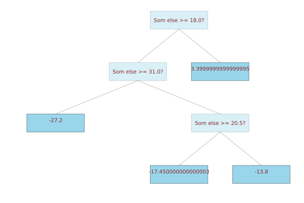

The BetaML.Trees Module
BetaML.Trees — ModuleBetaML.Trees moduleImplement the DecisionTreeEstimator and RandomForestEstimator models (Decision Trees and Random Forests).
Both Decision Trees and Random Forests can be used for regression or classification problems, based on the type of the labels (numerical or not). The automatic selection can be overridden with the parameter force_classification=true, typically if labels are integer representing some categories rather than numbers. For classification problems the output of predict is a dictionary with the key being the labels with non-zero probabilitity and the corresponding value its probability; for regression it is a numerical value.
Please be aware that, differently from most other implementations, the Random Forest algorithm collects and averages the probabilities from the trees, rather than just repording the mode, i.e. no information is lost and the output of the forest classifier is still a PMF.
To retrieve the prediction with the highest probability use mode over the prediciton returned by the model. Most error/accuracy measures in the Utils BetaML module works diretly with this format.
Missing data and trully unordered types are supported on the features, both on training and on prediction.
The module provide the following functions. Use ?[type or function] to access their full signature and detailed documentation:
Features are expected to be in the standard format (nRecords × nDimensions matrices) and the labels (either categorical or numerical) as a nRecords column vector.
Acknowlegdments: originally based on the Josh Gordon's code
Module Index
BetaML.Trees.DTHyperParametersSetBetaML.Trees.DecisionNodeBetaML.Trees.DecisionTreeClassifierBetaML.Trees.DecisionTreeEstimatorBetaML.Trees.DecisionTreeRegressorBetaML.Trees.InfoNodeBetaML.Trees.LeafBetaML.Trees.RFHyperParametersSetBetaML.Trees.RandomForestClassifierBetaML.Trees.RandomForestEstimatorBetaML.Trees.RandomForestRegressor
Detailed API
BetaML.Trees.DTHyperParametersSet — Typemutable struct DTHyperParametersSet <: BetaMLHyperParametersSetHyperparameters for DecisionTreeEstimator (Decision Tree).
Parameters:
max_depth::Union{Nothing, Int64}: The maximum depth the tree is allowed to reach. When this is reached the node is forced to become a leaf [def:nothing, i.e. no limits]min_gain::Float64: The minimum information gain to allow for a node's partition [def:0]min_records::Int64: The minimum number of records a node must holds to consider for a partition of it [def:2]max_features::Union{Nothing, Int64}: The maximum number of (random) features to consider at each partitioning [def:nothing, i.e. look at all features]force_classification::Bool: Whether to force a classification task even if the labels are numerical (typically when labels are integers encoding some feature rather than representing a real cardinal measure) [def:false]splitting_criterion::Union{Nothing, Function}: This is the name of the function to be used to compute the information gain of a specific partition. This is done by measuring the difference betwwen the "impurity" of the labels of the parent node with those of the two child nodes, weighted by the respective number of items. [def:nothing, i.e.ginifor categorical labels (classification task) andvariancefor numerical labels(regression task)]. Eithergini,entropy,varianceor a custom function. It can also be an anonymous function.fast_algorithm::Bool: Use an experimental faster algoritm for looking up the best split in ordered fields (colums). Currently it brings down the fitting time of an order of magnitude, but predictions are sensibly affected. If used, control the meaning of integer fields withinteger_encoded_cols.integer_encoded_cols::Union{Nothing, Vector{Int64}}: A vector of columns positions to specify which integer columns should be treated as encoding of categorical variables insteads of ordered classes/values. [def:nothing, integer columns with less than 20 unique values are considered categorical]. Useful in conjunction withfast_algorithm, little difference otherwise.tunemethod::AutoTuneMethod: The method - and its parameters - to employ for hyperparameters autotuning. SeeSuccessiveHalvingSearchfor the default method. To implement automatic hyperparameter tuning during the (first)fit!call simply setautotune=trueand eventually change the defaulttunemethodoptions (including the parameter ranges, the resources to employ and the loss function to adopt).
BetaML.Trees.DecisionNode — TypeDecisionNode(question,trueBranch,falseBranch, depth)
A tree's non-terminal node.
Constructor's arguments and struct members:
question: The question asked in this nodetrueBranch: A reference to the "true" branch of the treesfalseBranch: A reference to the "false" branch of the treesdepth: The nodes's depth in the tree
BetaML.Trees.DecisionTreeClassifier — Typemutable struct DecisionTreeClassifier <: MLJModelInterface.ProbabilisticA simple Decision Tree model for classification with support for Missing data, from the Beta Machine Learning Toolkit (BetaML).
Hyperparameters:
max_depth::Int64: The maximum depth the tree is allowed to reach. When this is reached the node is forced to become a leaf [def:0, i.e. no limits]min_gain::Float64: The minimum information gain to allow for a node's partition [def:0]min_records::Int64: The minimum number of records a node must holds to consider for a partition of it [def:2]max_features::Int64: The maximum number of (random) features to consider at each partitioning [def:0, i.e. look at all features]splitting_criterion::Function: This is the name of the function to be used to compute the information gain of a specific partition. This is done by measuring the difference betwwen the "impurity" of the labels of the parent node with those of the two child nodes, weighted by the respective number of items. [def:gini]. Eithergini,entropyor a custom function. It can also be an anonymous function.rng::Random.AbstractRNG: A Random Number Generator to be used in stochastic parts of the code [deafult:Random.GLOBAL_RNG]
Example:
julia> using MLJ
julia> X, y = @load_iris;
julia> modelType = @load DecisionTreeClassifier pkg = "BetaML" verbosity=0
BetaML.Trees.DecisionTreeClassifier
julia> model = modelType()
DecisionTreeClassifier(
max_depth = 0,
min_gain = 0.0,
min_records = 2,
max_features = 0,
splitting_criterion = BetaML.Utils.gini,
rng = Random._GLOBAL_RNG())
julia> (fitResults, cache, report) = MLJ.fit(model, 0, X, y);
julia> class_est = predict(model, fitResults, X)
150-element CategoricalDistributions.UnivariateFiniteVector{Multiclass{3}, String, UInt32, Float64}:
UnivariateFinite{Multiclass{3}}(setosa=>1.0, versicolor=>0.0, virginica=>0.0)
UnivariateFinite{Multiclass{3}}(setosa=>1.0, versicolor=>0.0, virginica=>0.0)
UnivariateFinite{Multiclass{3}}(setosa=>1.0, versicolor=>0.0, virginica=>0.0)
⋮
UnivariateFinite{Multiclass{3}}(setosa=>0.0, versicolor=>0.0, virginica=>1.0)
UnivariateFinite{Multiclass{3}}(setosa=>0.0, versicolor=>0.0, virginica=>1.0)
UnivariateFinite{Multiclass{3}}(setosa=>0.0, versicolor=>0.0, virginica=>1.0)BetaML.Trees.DecisionTreeEstimator — Typemutable struct DecisionTreeEstimator <: BetaMLSupervisedModelA Decision Tree classifier and regressor (supervised).
Decision Tree works by finding the "best" question to split the fitting data (according to the metric specified by the parameter splitting_criterion on the associated labels) untill either all the dataset is separated or a terminal condition is reached.
For the parameters see ?DTHyperParametersSet and ?BetaMLDefaultOptionsSet.
Notes:
- Online fitting (re-fitting with new data) is not supported
- Missing data (in the feature dataset) is supported.
Examples:
- Classification...
julia> using BetaML
julia> X = [1.8 2.5; 0.5 20.5; 0.6 18; 0.7 22.8; 0.4 31; 1.7 3.7];
julia> y = ["a","b","b","b","b","a"];
julia> mod = DecisionTreeEstimator(max_depth=5)
DecisionTreeEstimator - A Decision Tree model (unfitted)
julia> ŷ = fit!(mod,X,y) |> mode
6-element Vector{String}:
"a"
"b"
"b"
"b"
"b"
"a"
julia> println(mod)
DecisionTreeEstimator - A Decision Tree classifier (fitted on 6 records)
Dict{String, Any}("job_is_regression" => 0, "fitted_records" => 6, "max_reached_depth" => 2, "avg_depth" => 2.0, "xndims" => 2)
*** Printing Decision Tree: ***
1. Is col 2 >= 18.0 ?
--> True : Dict("b" => 1.0)
--> False: Dict("a" => 1.0)- Regression...
julia> using BetaML
julia> X = [1.8 2.5; 0.5 20.5; 0.6 18; 0.7 22.8; 0.4 31; 1.7 3.7];
julia> y = 2 .* X[:,1] .- X[:,2] .+ 3;
julia> mod = DecisionTreeEstimator(max_depth=10)
DecisionTreeEstimator - A Decision Tree model (unfitted)
julia> ŷ = fit!(mod,X,y);
julia> hcat(y,ŷ)
6×2 Matrix{Float64}:
4.1 3.4
-16.5 -17.45
-13.8 -13.8
-18.4 -17.45
-27.2 -27.2
2.7 3.4
julia> println(mod)
DecisionTreeEstimator - A Decision Tree regressor (fitted on 6 records)
Dict{String, Any}("job_is_regression" => 1, "fitted_records" => 6, "max_reached_depth" => 4, "avg_depth" => 3.25, "xndims" => 2)
*** Printing Decision Tree: ***
1. Is col 2 >= 18.0 ?
--> True :
1.2. Is col 2 >= 31.0 ?
--> True : -27.2
--> False:
1.2.3. Is col 2 >= 20.5 ?
--> True : -17.450000000000003
--> False: -13.8
--> False: 3.3999999999999995- Visualisation...
You can either text-print or plot a decision tree using the AbstractTree and TreeRecipe package..
```julia julia> println(mod) DecisionTreeEstimator - A Decision Tree regressor (fitted on 6 records) Dict{String, Any}("jobisregression" => 1, "fittedrecords" => 6, "maxreacheddepth" => 4, "avgdepth" => 3.25, "xndims" => 2) *** Printing Decision Tree: ***
- Is col 2 >= 18.0 ?
–> True : 1.2. Is col 2 >= 31.0 ? –> True : -27.2 –> False: 1.2.3. Is col 2 >= 20.5 ? –> True : -17.450000000000003 –> False: -13.8 –> False: 3.3999999999999995
julia> using Plots, TreeRecipe, AbstractTrees julia> featurenames = ["Something", "Som else"]; julia> wrappedtree = wrap(dtree, featurenames = featurenames); # featurenames is otional julia> printtree(wrappedtree) Som else >= 18.0? ├─ Som else >= 31.0? │ ├─ -27.2 │ │ │ └─ Som else >= 20.5? │ ├─ -17.450000000000003 │ │ │ └─ -13.8 │ └─ 3.3999999999999995 julia> plot(wrappedtree) ```` 
BetaML.Trees.DecisionTreeRegressor — Typemutable struct DecisionTreeRegressor <: MLJModelInterface.DeterministicA simple Decision Tree model for regression with support for Missing data, from the Beta Machine Learning Toolkit (BetaML).
Hyperparameters:
max_depth::Int64: The maximum depth the tree is allowed to reach. When this is reached the node is forced to become a leaf [def:0, i.e. no limits]min_gain::Float64: The minimum information gain to allow for a node's partition [def:0]min_records::Int64: The minimum number of records a node must holds to consider for a partition of it [def:2]max_features::Int64: The maximum number of (random) features to consider at each partitioning [def:0, i.e. look at all features]splitting_criterion::Function: This is the name of the function to be used to compute the information gain of a specific partition. This is done by measuring the difference betwwen the "impurity" of the labels of the parent node with those of the two child nodes, weighted by the respective number of items. [def:variance]. Eithervarianceor a custom function. It can also be an anonymous function.rng::Random.AbstractRNG: A Random Number Generator to be used in stochastic parts of the code [deafult:Random.GLOBAL_RNG]
Example:
julia> using MLJ
julia> X, y = @load_boston;
julia> modelType = @load DecisionTreeRegressor pkg = "BetaML" verbosity=0
BetaML.Trees.DecisionTreeRegressor
julia> model = modelType()
DecisionTreeRegressor(
max_depth = 0,
min_gain = 0.0,
min_records = 2,
max_features = 0,
splitting_criterion = BetaML.Utils.variance,
rng = Random._GLOBAL_RNG())
julia> (fitResults, cache, report) = MLJ.fit(model, 0, X, y);
julia> y_est = predict(model, fitResults, X)
506-element Vector{Float64}:
26.35
21.6
34.8
⋮
23.75
22.2
13.2BetaML.Trees.InfoNode — TypeThese types are introduced so that additional information currently not present in a DecisionTree-structure – namely the feature names – can be used for visualization.
BetaML.Trees.Leaf — TypeLeaf(y,depth)
A tree's leaf (terminal) node.
Constructor's arguments:
y: The labels assorciated to each record (either numerical or categorical)depth: The nodes's depth in the tree
Struct members:
predictions: Either the relative label's count (i.e. a PMF) or the meandepth: The nodes's depth in the tree
BetaML.Trees.RFHyperParametersSet — Typemutable struct RFHyperParametersSet <: BetaMLHyperParametersSetHyperparameters for RandomForestEstimator (Random Forest).
Parameters:
n_trees::Int64: Number of (decision) trees in the forest [def:30]max_depth::Union{Nothing, Int64}: The maximum depth the tree is allowed to reach. When this is reached the node is forced to become a leaf [def:nothing, i.e. no limits]min_gain::Float64: The minimum information gain to allow for a node's partition [def:0]min_records::Int64: The minimum number of records a node must holds to consider for a partition of it [def:2]max_features::Union{Nothing, Int64}: The maximum number of (random) features to consider when choosing the optimal partition of the dataset [def:nothing, i.e. square root of the dimensions of the training data`]force_classification::Bool: Whether to force a classification task even if the labels are numerical (typically when labels are integers encoding some feature rather than representing a real cardinal measure) [def:false]splitting_criterion::Union{Nothing, Function}: Eithergini,entropyorvariance. This is the name of the function to be used to compute the information gain of a specific partition. This is done by measuring the difference betwwen the "impurity" of the labels of the parent node with those of the two child nodes, weighted by the respective number of items. [def:nothing, i.e.ginifor categorical labels (classification task) andvariancefor numerical labels(regression task)]. It can be an anonymous function.fast_algorithm::Bool: Use an experimental faster algoritm for looking up the best split in ordered fields (colums). Currently it brings down the fitting time of an order of magnitude, but predictions are sensibly affected. If used, control the meaning of integer fields withinteger_encoded_cols.integer_encoded_cols::Union{Nothing, Vector{Int64}}: A vector of columns positions to specify which integer columns should be treated as encoding of categorical variables insteads of ordered classes/values. [def:nothing, integer columns with less than 20 unique values are considered categorical]. Useful in conjunction withfast_algorithm, little difference otherwise.beta::Float64: Parameter that regulate the weights of the scoring of each tree, to be (optionally) used in prediction based on the error of the individual trees computed on the records on which trees have not been trained. Higher values favour "better" trees, but too high values will cause overfitting [def:0, i.e. uniform weigths]oob::Bool: Wheter to compute the Out-Of-Bag error, an estimation of the validation error (the mismatching error for classification and the relative mean error for regression jobs).tunemethod::AutoTuneMethod: The method - and its parameters - to employ for hyperparameters autotuning. SeeSuccessiveHalvingSearchfor the default method. To implement automatic hyperparameter tuning during the (first)fit!call simply setautotune=trueand eventually change the defaulttunemethodoptions (including the parameter ranges, the resources to employ and the loss function to adopt).
BetaML.Trees.RandomForestClassifier — Typemutable struct RandomForestClassifier <: MLJModelInterface.ProbabilisticA simple Random Forest model for classification with support for Missing data, from the Beta Machine Learning Toolkit (BetaML).
Hyperparameters:
n_trees::Int64max_depth::Int64: The maximum depth the tree is allowed to reach. When this is reached the node is forced to become a leaf [def:0, i.e. no limits]min_gain::Float64: The minimum information gain to allow for a node's partition [def:0]min_records::Int64: The minimum number of records a node must holds to consider for a partition of it [def:2]max_features::Int64: The maximum number of (random) features to consider at each partitioning [def:0, i.e. square root of the data dimensions]splitting_criterion::Function: This is the name of the function to be used to compute the information gain of a specific partition. This is done by measuring the difference betwwen the "impurity" of the labels of the parent node with those of the two child nodes, weighted by the respective number of items. [def:gini]. Eithergini,entropyor a custom function. It can also be an anonymous function.β::Float64: Parameter that regulate the weights of the scoring of each tree, to be (optionally) used in prediction based on the error of the individual trees computed on the records on which trees have not been trained. Higher values favour "better" trees, but too high values will cause overfitting [def:0, i.e. uniform weigths]rng::Random.AbstractRNG: A Random Number Generator to be used in stochastic parts of the code [deafult:Random.GLOBAL_RNG]
Example :
julia> using MLJ
julia> X, y = @load_iris;
julia> modelType = @load RandomForestClassifier pkg = "BetaML" verbosity=0
BetaML.Trees.RandomForestClassifier
julia> model = modelType()
RandomForestClassifier(
n_trees = 30,
max_depth = 0,
min_gain = 0.0,
min_records = 2,
max_features = 0,
splitting_criterion = BetaML.Utils.gini,
β = 0.0,
rng = Random._GLOBAL_RNG())
julia> (fitResults, cache, report) = MLJ.fit(model, 0, X, y);
julia> class_est = predict(model, fitResults, X)
150-element CategoricalDistributions.UnivariateFiniteVector{Multiclass{3}, String, UInt32, Float64}:
UnivariateFinite{Multiclass{3}}(setosa=>1.0, versicolor=>0.0, virginica=>0.0)
UnivariateFinite{Multiclass{3}}(setosa=>1.0, versicolor=>0.0, virginica=>0.0)
UnivariateFinite{Multiclass{3}}(setosa=>1.0, versicolor=>0.0, virginica=>0.0)
⋮
UnivariateFinite{Multiclass{3}}(setosa=>0.0, versicolor=>0.0, virginica=>1.0)
UnivariateFinite{Multiclass{3}}(setosa=>0.0, versicolor=>0.0, virginica=>1.0)
UnivariateFinite{Multiclass{3}}(setosa=>0.0, versicolor=>0.0, virginica=>1.0)BetaML.Trees.RandomForestEstimator — Typemutable struct RandomForestEstimator <: BetaMLSupervisedModelA Random Forest classifier and regressor (supervised).
Random forests are ensemble of Decision Trees models (see ?DecisionTreeEstimator).
For the parameters see ?RFHyperParametersSet and ?BetaMLDefaultOptionsSet.
Notes :
- Each individual decision tree is built using bootstrap over the data, i.e. "sampling N records with replacement" (hence, some records appear multiple times and some records do not appear in the specific tree training). The
maxx_featureinjects further variability and reduces the correlation between the forest trees. - The predictions of the "forest" (using the function
predict()) are then the aggregated predictions of the individual trees (from which the name "bagging": boostrap aggregating). - The performances of each individual trees, as measured using the records they have not being trained with, can then be (optionally) used as weights in the
predictfunction. The parameterbeta ≥ 0regulate the distribution of these weights: larger isβ, the greater the importance (hence the weights) attached to the best-performing trees compared to the low-performing ones. Using these weights can significantly improve the forest performances (especially using small forests), however the correct value ofbetadepends on the problem under exam (and the chosen caratteristics of the random forest estimator) and should be cross-validated to avoid over-fitting. - Note that training
RandomForestEstimatoruses multiple threads if these are available. You can check the number of threads available withThreads.nthreads(). To set the number of threads in Julia either set the environmental variableJULIA_NUM_THREADS(before starting Julia) or start Julia with the command line option--threads(most integrated development editors for Julia already set the number of threads to 4). - Online fitting (re-fitting with new data) is not supported
- Missing data (in the feature dataset) is supported.
Examples:
- Classification...
julia> using BetaML
julia> X = [1.8 2.5; 0.5 20.5; 0.6 18; 0.7 22.8; 0.4 31; 1.7 3.7];
julia> y = ["a","b","b","b","b","a"];
julia> mod = RandomForestEstimator(n_trees=5)
RandomForestEstimator - A 5 trees Random Forest model (unfitted)
julia> ŷ = fit!(mod,X,y) |> mode
6-element Vector{String}:
"a"
"b"
"b"
"b"
"b"
"a"
julia> println(mod)
RandomForestEstimator - A 5 trees Random Forest classifier (fitted on 6 records)
Dict{String, Any}("job_is_regression" => 0, "avg_avg_depth" => 1.8, "fitted_records" => 6, "avg_mmax_reached_depth" => 1.8, "oob_errors" => Inf, "xndims" => 2)- Regression...
julia> using BetaML
julia> X = [1.8 2.5; 0.5 20.5; 0.6 18; 0.7 22.8; 0.4 31; 1.7 3.7];
julia> y = 2 .* X[:,1] .- X[:,2] .+ 3;
julia> mod = RandomForestEstimator(n_trees=5)
RandomForestEstimator - A 5 trees Random Forest model (unfitted)
julia> ŷ = fit!(mod,X,y);
julia> hcat(y,ŷ)
6×2 Matrix{Float64}:
4.1 2.98
-16.5 -18.37
-13.8 -14.61
-18.4 -17.37
-27.2 -20.78
2.7 2.98
julia> println(mod)
RandomForestEstimator - A 5 trees Random Forest regressor (fitted on 6 records)
Dict{String, Any}("job_is_regression" => 1, "fitted_records" => 6, "avg_avg_depth" => 2.8833333333333333, "oob_errors" => Inf, "avg_max_reached_depth" => 3.4, "xndims" => 2)BetaML.Trees.RandomForestRegressor — Typemutable struct RandomForestRegressor <: MLJModelInterface.DeterministicA simple Random Forest model for regression with support for Missing data, from the Beta Machine Learning Toolkit (BetaML).
Hyperparameters:
n_trees::Int64: Number of (decision) trees in the forest [def:30]max_depth::Int64: The maximum depth the tree is allowed to reach. When this is reached the node is forced to become a leaf [def:0, i.e. no limits]min_gain::Float64: The minimum information gain to allow for a node's partition [def:0]min_records::Int64: The minimum number of records a node must holds to consider for a partition of it [def:2]max_features::Int64: The maximum number of (random) features to consider at each partitioning [def:0, i.e. square root of the data dimension]splitting_criterion::Function: This is the name of the function to be used to compute the information gain of a specific partition. This is done by measuring the difference betwwen the "impurity" of the labels of the parent node with those of the two child nodes, weighted by the respective number of items. [def:variance]. Eithervarianceor a custom function. It can also be an anonymous function.β::Float64: Parameter that regulate the weights of the scoring of each tree, to be (optionally) used in prediction based on the error of the individual trees computed on the records on which trees have not been trained. Higher values favour "better" trees, but too high values will cause overfitting [def:0, i.e. uniform weigths]rng::Random.AbstractRNG: A Random Number Generator to be used in stochastic parts of the code [deafult:Random.GLOBAL_RNG]
Example:
julia> using MLJ
julia> X, y = @load_boston;
julia> modelType = @load RandomForestRegressor pkg = "BetaML" verbosity=0
BetaML.Trees.RandomForestRegressor
julia> model = modelType()
RandomForestRegressor(
n_trees = 30,
max_depth = 0,
min_gain = 0.0,
min_records = 2,
max_features = 0,
splitting_criterion = BetaML.Utils.variance,
β = 0.0,
rng = Random._GLOBAL_RNG())
julia> (fitResults, cache, report) = MLJ.fit(model, 0, X, y);
julia> y_est = predict(model, fitResults, X)
506-element Vector{Float64}:
25.283333333333335
22.700999999999997
36.67500000000002
⋮
19.378333333333334
24.191666666666663
23.726666666666674
15.393333333333327